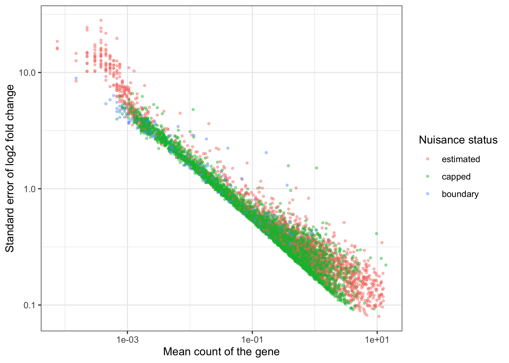
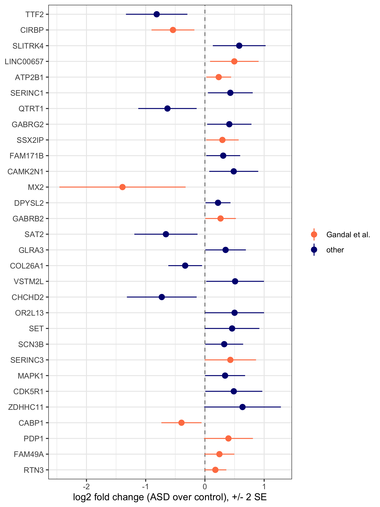
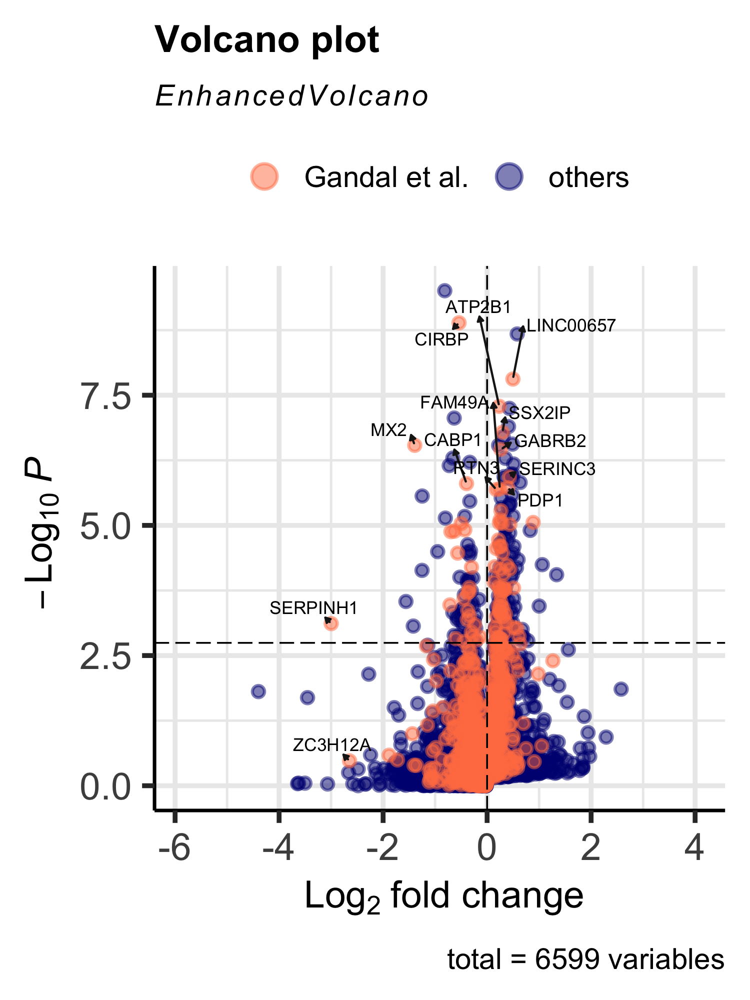
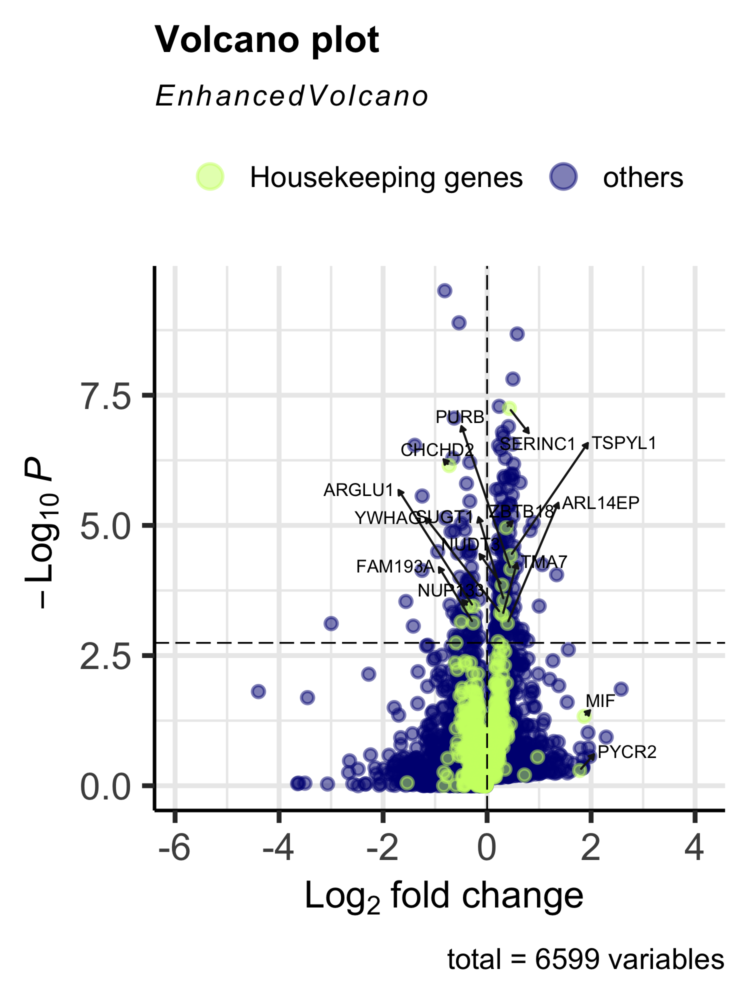
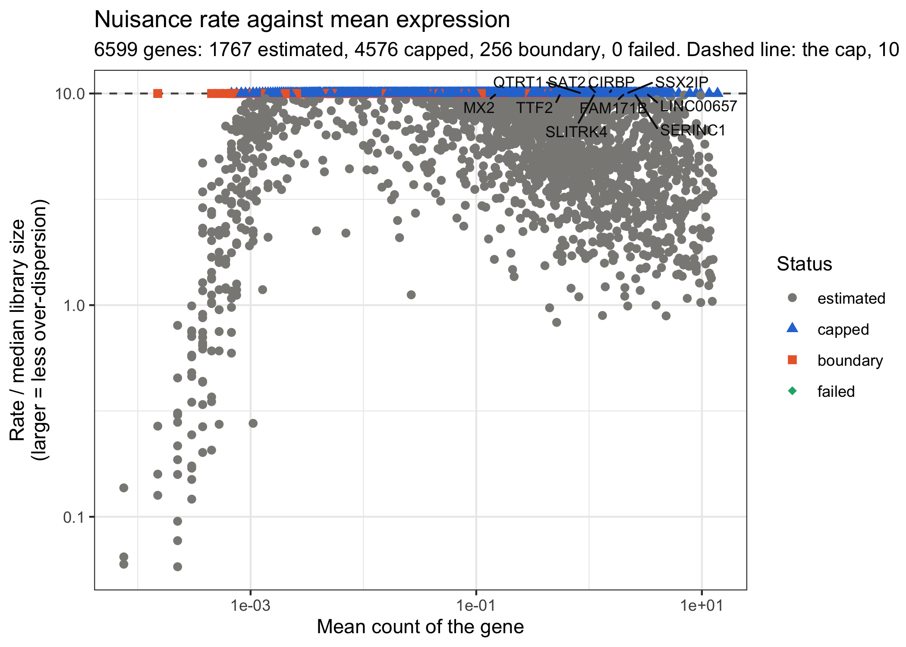
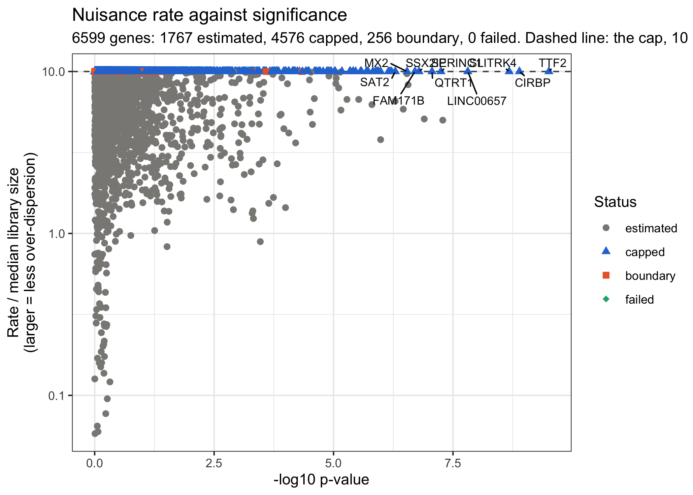
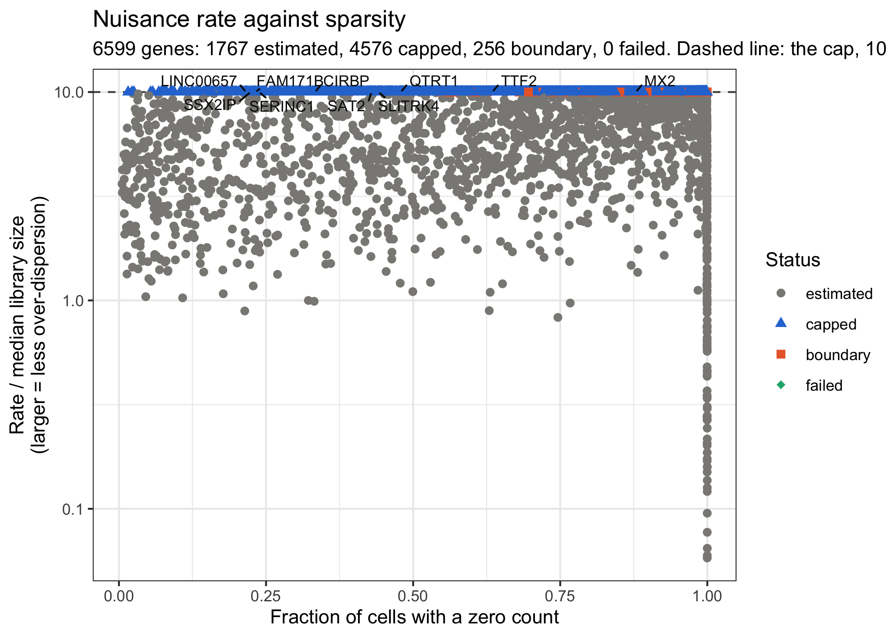
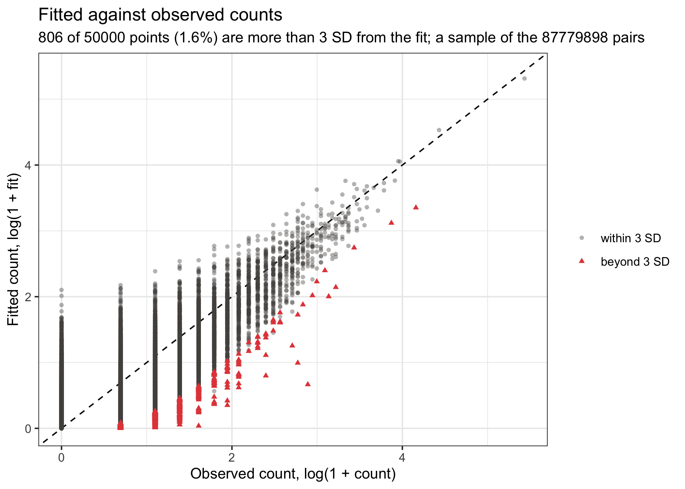
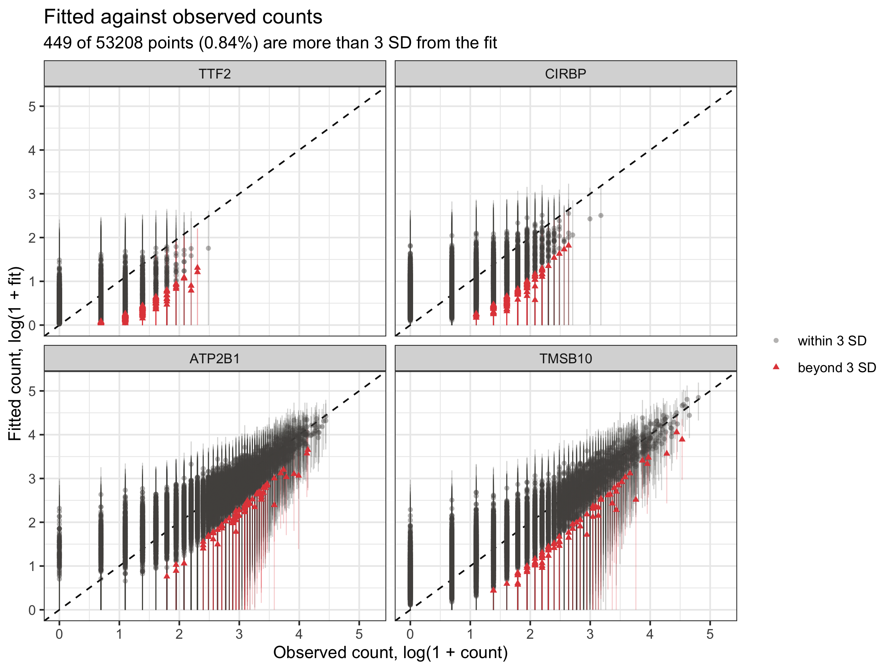

Neuron analysis for Layer 2/3 in ASD
Kevin Z. Lin
2026-09-30
Source:vignettes/articles/asd.Rmd
asd.RmdOverview
This article runs eSVD-DE (Lin, Qiu and Roeder, 2024) on a real
cohort: the Layer 2/3 excitatory neurons of Velmeshev et al. (2019), 15
donors with Autism Spectrum Disorder (ASD) against 16 control donors, on
6,599 genes. It uses the wrapper eSVD2::eSVD_helper(),
which runs the whole method in one call, and then looks at what came
out: the log2 fold change of each gene with its standard error, the
volcano plots, and the diagnostic plots of the over-dispersion estimate.
A section at the end explains what every tuning parameter of the wrapper
changes inside the method.
The data set is the one built in Neuron
preprocessing for eSVD-DE tutorial and can be downloaded from Dropbox.
The file is called asd_seurat.RData and contains three
variables:
-
asd: the Seurat object we will be analyzing, 13,302 cells and 6,599 genes (all deemed variable features) -
date_of_run: the date whenasdwas constructed -
session_info: the session info whenasdwas constructed
Notably, this is not the version of the dataset used in the eSVD-DE paper. The intent of this article is to show how to perform an eSVD-DE analysis, so the procedure is the typical usage of the method while the processed data differs from the paper’s.
The fit takes about 30 minutes on one core, so the chunks that need
it are not run when the site is built (eval = FALSE); their
output is pasted in from a run on 2026-09-30 with eSVD2 1.2.0, and the
figures are pre-rendered. The chunks that only need the packages do
run.
| Stage | What it does | Functions |
|---|---|---|
| Load | Load the Seurat object and look at the cohort |
load(), table()
|
| Fit and test | Filter the cohort, fit the model, estimate the over-dispersion, compute the posterior and test every gene | eSVD2::eSVD_helper() |
| Report | One row per gene: fold change, its standard error, p-value, FDR, nuisance status | eSVD2::report_results() |
| Fold change | The fold change and its standard error, on their own and in volcano plots |
ggplot2,
EnhancedVolcano::EnhancedVolcano()
|
| Diagnostics | Check the over-dispersion estimate and the fit |
eSVD2::plot_nuisance(),
eSVD2::plot_fitted_vs_observed(),
eSVD2::recompute_pvalue()
|
Relevant citation:
Velmeshev, D., Schirmer, L., Jung, D., Haeussler, M., Perez, Y., Mayer, S., ... & Kriegstein, A. R. (2019). Single-cell genomics identifies cell type-specific molecular changes in autism. Science, 364(6441), 685-689.
library(Seurat)
library(SeuratObject)
library(eSVD2)
library(ggplot2)
library(EnhancedVolcano)
set.seed(10)
date_of_run <- Sys.time()
session_info <- sessionInfo()Loading the data
We first load the data. We can use table() to see how
many cells each donor contributes and which donors are ASD
or Control.
An object of class Seurat
6599 features across 13302 samples within 1 assay
Active assay: RNA (6599 features, 6599 variable features)
2 layers present: counts, data ASD Control
indiv_1823 0 72
indiv_4341 0 733
indiv_4849 428 0
indiv_4899 349 0
indiv_5144 202 0
indiv_5163 0 145
indiv_5242 0 81
indiv_5278 944 0
indiv_5294 449 0
indiv_5387 0 1129
indiv_5391 0 237
indiv_5403 69 0
indiv_5408 0 162
indiv_5419 327 0
indiv_5531 631 0
indiv_5538 0 391
indiv_5554 0 233
indiv_5565 881 0
indiv_5577 0 215
indiv_5841 451 0
indiv_5864 275 0
indiv_5879 0 278
indiv_5893 0 976
indiv_5936 0 193
indiv_5939 1016 0
indiv_5945 422 0
indiv_5958 0 826
indiv_5976 0 106
indiv_5978 264 0
indiv_6032 0 289
indiv_6033 528 0The metadata also has each cell’s brain region (region),
each donor’s age and sex, and the capture batch (Capbatch)
and sequencing batch (Seqbatch) of each cell.
Two of these covariates are redundant, and the model refuses them. In these cells each capture batch lies within one sequencing batch, and each capture batch comes from one region (the ACC cells are exactly capture batches CB3, CB4, CB8 and CB9). Indicators for
region,SeqbatchandCapbatchtogether are therefore collinear. eSVD2 1.0 fit such a design anyway (its ridge-penalized start spreads the coefficient over the collinear columns, and batch columns were never reparameterized); from version 1.2.0eSVD2::initialize_esvd()stops and names the redundant columns. Below we adjust forsexandCapbatch, which span the same space as the full set;regionandSeqbatchare accounted for through the capture batch.
Running eSVD-DE in one call
We test for differential expression in the mean between the 15 ASD
donors and the 16 control donors among the 6,599 genes. The whole method
is one call to eSVD2::eSVD_helper(). The arguments name the
columns of asd@meta.data to use:
-
id_var: the donor, the unit of inference; -
case_control_varandcase_control_levels: the diagnosis, control first, then case (reversing them flips the sign of every fold change); -
categorical_varsandnumerical_vars: the covariates to adjust for; -
batch_var_prefix: a regular expression naming which of the categorical covariates are batch variables. Their coefficients are held apart from the reparameterization of the fit (see the last section).
Everything else is at its default, including k = 30
latent dimensions and the cap on the over-dispersion,
cap_multiplier = 10. On a single core of a 2023 MacBook Pro
(Apple M2 Max, 32 Gb RAM) this took about 30 minutes. With
verbose = 1 the wrapper prints the stage it is in.
time_start <- Sys.time()
eSVD_obj <- eSVD2::eSVD_helper(
batch_var_prefix = "Capbatch",
case_control_levels = c("Control", "ASD"),
case_control_var = "diagnosis",
categorical_vars = c("sex", "Capbatch"),
id_var = "individual",
numerical_vars = "age",
seurat_obj = asd,
k = 30,
verbose = 1
)
time_end <- Sys.time()
save(eSVD_obj, session_info, date_of_run,
file = "asd_esvd.RData")The result is an eSVD object. With the default
bool_diet = TRUE it holds the final fit
(fit_Second: the latent vectors, the coefficients and the
per-gene nuisance estimates), the per-gene results, and
param, the record of every setting, but not the counts or
the covariates. It is about 17 Mb in memory. gene_status
says which genes were analyzed; here every gene was, because the
preprocessing already removed the all-zero genes.
[1] "param" "latest_Fit" "case_control" "individual"
[5] "fit_Second" "teststat_vec" "case_mean" "control_mean"
[9] "case_var" "control_var" "log2fc_vec" "log2fc_se_vec"
[13] "pvalue_list" "gene_status" analyzed all_zero
6599 0 Reporting the results
eSVD2::report_results() collects the results into a data
frame with one row per gene: the log2 fold change (logFC,
the log2 of the ratio of the case donors’ mean to the control donors’
mean), its standard error (logFC_se), the p-value on three
scales (log10pvalue is minus its log10, which keeps the
ranking when pvalue underflows to 0), the
Benjamini-Hochberg adjusted p-value (pvalue_adj) and
nuisance_status, what the over-dispersion estimate did with
the gene (see the diagnostics section). Ranking by
log10pvalue gives the most significant genes.
result_df <- eSVD2::report_results(eSVD_obj)
result_df <- result_df[order(result_df$log10pvalue, decreasing = TRUE), ]
print(utils::head(result_df, 15), digits = 3)
sum(result_df$pvalue_adj <= 0.05) genes logFC logFC_se log10pvalue pvalue pvalue_adj nuisance_status
TTF2 TTF2 -0.815 0.259 9.51 3.11e-10 2.05e-06 capped
CIRBP CIRBP -0.540 0.181 8.89 1.29e-09 4.24e-06 capped
SLITRK4 SLITRK4 0.579 0.223 8.68 2.11e-09 4.64e-06 capped
LINC00657 LINC00657 0.496 0.205 7.81 1.55e-08 2.55e-05 capped
ATP2B1 ATP2B1 0.233 0.105 7.29 5.17e-08 6.23e-05 estimated
SERINC1 SERINC1 0.429 0.189 7.25 5.66e-08 6.23e-05 capped
QTRT1 QTRT1 -0.633 0.247 7.06 8.68e-08 8.19e-05 capped
GABRG2 GABRG2 0.412 0.187 6.90 1.26e-07 1.04e-04 estimated
SSX2IP SSX2IP 0.295 0.137 6.79 1.63e-07 1.19e-04 capped
FAM171B FAM171B 0.308 0.143 6.70 1.98e-07 1.30e-04 capped
CAMK2N1 CAMK2N1 0.486 0.207 6.56 2.75e-07 1.48e-04 estimated
MX2 MX2 -1.392 0.533 6.54 2.90e-07 1.48e-04 capped
DPYSL2 DPYSL2 0.221 0.106 6.54 2.91e-07 1.48e-04 estimated
GABRB2 GABRB2 0.264 0.129 6.46 3.47e-07 1.64e-04 estimated
SAT2 SAT2 -0.659 0.267 6.29 5.10e-07 2.12e-04 capped[1] 243243 of the 6,599 genes are significant at FDR 0.05 (336 at FDR 0.10).
The most significant gene, TTF2, is lower in the ASD donors
by a factor of about 1.8 (a log2 fold change of -0.81); 22 of the 30
most significant genes are higher in ASD. Notice the last column: most
of the top genes had their over-dispersion capped, which the diagnostics
section returns to.
The log fold change and its standard error
From version 1.2.0 every analysis reports, for each gene, the log2
fold change between the case and the control donors and a standard error
for it. Both are stored on the object as
eSVD_obj$log2fc_vec and
eSVD_obj$log2fc_se_vec, and report_results()
copies them into logFC and logFC_se. Three
things to know about the standard error:
- It is a delta-method standard error of
log2(case_mean / control_mean), built from the two per-arm variances that the test statistic divides by, and it is divided by the number of donors in each arm, not the number of cells. That puts it on the same footing as the standard error of a pseudobulk method such as DESeq2, dreamlet or NEBULA. -
logFC / logFC_seis not the statistic behindpvalue. The test is computed on the linear scale and calibrated with an empirical null across genes, so a gene’s p-value and its fold-change interval do not have to agree exactly. - It accounts for the variation between donors and within donors given
the fit, but not for the uncertainty of the fit itself. See
?eSVD2::compute_log_fold_changefor the details.
The first figure draws the standard error against the gene’s mean
count, colored by nuisance_status. The standard error falls
with the mean count, from about 10 on the log2 scale for the rarest
genes to about 0.1 for the most expressed, and at a given count it
depends little on whether the rate was estimated or capped. The genes at
the boundary (no finite maximum-likelihood rate) have a larger standard
error for their count than the others.
fit <- eSVD_obj[[eSVD_obj$latest_Fit]]
se_df <- data.frame(
gene = names(eSVD_obj$log2fc_se_vec),
mean_count = fit$gene_mean_count_vec[names(eSVD_obj$log2fc_se_vec)],
log2fc_se = eSVD_obj$log2fc_se_vec,
nuisance_status = fit$nuisance_status[names(eSVD_obj$log2fc_se_vec)]
)
plot1 <- ggplot2::ggplot(se_df, ggplot2::aes(x = mean_count,
y = log2fc_se,
color = nuisance_status))
plot1 <- plot1 + ggplot2::geom_point(alpha = 0.4, size = 0.8)
plot1 <- plot1 + ggplot2::scale_x_log10() + ggplot2::scale_y_log10()
plot1 <- plot1 + ggplot2::labs(x = "Mean count of the gene",
y = "Standard error of log2 fold change",
color = "Nuisance status")
plot1 <- plot1 + ggplot2::theme_bw()
plot(plot1)
Standard error of the log2 fold change against the gene’s mean count
The second figure is a forest plot of the 30 most significant genes: the log2 fold change with an interval of plus or minus two standard errors, with the genes that Gandal et al. (2022) found differentially expressed in bulk ASD cortex in a different color. Eleven of the 30 are Gandal et al. genes. For these 30 genes the interval excludes zero, but that is not true of the significant genes as a whole: for 87 percent of the 243 genes at FDR 0.05, the interval of plus or minus two standard errors covers zero. The two answer different questions. The p-value comes from the Welch statistic after the empirical null has recentered and rescaled it across genes (here the null was estimated to have mean -0.15 and standard deviation 0.42 on the Gaussian scale, so the statistics are spread more tightly than a standard normal and the calibration makes more genes significant), while the interval takes the fold change and its standard error at face value.
data("gandal_df", package = "eSVD2")
gandal_genes <- gandal_df[which(gandal_df[, "WholeCortex_ASD_FDR"] <= 0.05),
"external_gene_name"]
gandal_genes <- intersect(gandal_genes, result_df$genes)
top_df <- result_df[seq_len(30), ]
top_df$gene_set <- ifelse(top_df$genes %in% gandal_genes,
"Gandal et al.", "other")
top_df$genes <- factor(top_df$genes, levels = rev(top_df$genes))
plot1 <- ggplot2::ggplot(top_df, ggplot2::aes(x = genes,
y = logFC,
color = gene_set))
plot1 <- plot1 + ggplot2::geom_hline(yintercept = 0, linetype = "dashed",
color = "gray50")
plot1 <- plot1 + ggplot2::geom_pointrange(
ggplot2::aes(ymin = logFC - 2 * logFC_se, ymax = logFC + 2 * logFC_se)
)
plot1 <- plot1 + ggplot2::coord_flip()
plot1 <- plot1 + ggplot2::scale_color_manual(
values = c("Gandal et al." = "coral", "other" = "navy")
)
plot1 <- plot1 + ggplot2::labs(
x = NULL,
y = "log2 fold change (ASD over control), +/- 2 SE",
color = NULL
)
plot1 <- plot1 + ggplot2::theme_bw()
plot(plot1)
The 30 most significant genes: log2 fold change with +/- 2 standard errors
Volcano plots
To visualize the p-values, we plot a volcano plot where the x-axis is the stored log2 fold change and the y-axis the negative log10 p-value. The dotted horizontal line is the p-value at the FDR cutoff of 0.05.
To give the volcano plot some biological interpretation, we mark the genes found in Gandal et al. (see https://www.nature.com/articles/s41586-022-05377-7). That study was based on bulk sequencing of brain regions, where possibly many cell types are involved in the DEG analysis. Nonetheless, we would expect a good number of the DEGs of Gandal et al. to be highly significant in our analysis, which is what the volcano plot shows: 83 of the 1,322 Gandal et al. genes present are significant at FDR 0.05 (6.3 percent, against 3.7 percent of all genes), and 11 of the 30 most significant genes are among them.
volcano_df <- data.frame(
gene = result_df$genes,
lfc = result_df$logFC,
pvalue = pmax(result_df$pvalue, 1e-300) # EnhancedVolcano needs p > 0
)
pCutoff <- max(volcano_df$pvalue[which(result_df$pvalue_adj <= 0.05)])
volcano_df2 <- volcano_df[c(which(!volcano_df$gene %in% gandal_genes),
which(volcano_df$gene %in% gandal_genes)), ]
colCustom <- sapply(volcano_df2$gene, function(gene){
ifelse(gene %in% gandal_genes, "coral", "navy")
})
names(colCustom)[colCustom == "coral"] <- "Gandal et al."
names(colCustom)[colCustom == "navy"] <- "others"
EnhancedVolcano::EnhancedVolcano(
volcano_df2,
lab = volcano_df2$gene,
selectLab = gandal_genes,
colCustom = colCustom,
x = "lfc",
y = "pvalue",
ylim = c(0, max(result_df$log10pvalue)),
labSize = 3,
pCutoff = pCutoff,
FCcutoff = 0,
drawConnectors = TRUE
)
Volcano plot of the eSVD-DE analysis, highlighting the Gandal et al. genes
Alternatively, we can highlight the housekeeping genes, which act as a rough negative control: we would not expect many of them to differ between case and control donors. 16 of the 942 housekeeping genes present are significant at FDR 0.05 (1.7 percent, against 3.7 percent of all genes).
data("housekeeping_df", package = "eSVD2")
hk_genes <- intersect(housekeeping_df[, "Gene"], result_df$genes)
volcano_df2 <- volcano_df[c(which(!volcano_df$gene %in% hk_genes),
which(volcano_df$gene %in% hk_genes)), ]
colCustom <- sapply(volcano_df2$gene, function(gene){
ifelse(gene %in% hk_genes, "darkolivegreen1", "navy")
})
names(colCustom)[colCustom == "darkolivegreen1"] <- "Housekeeping genes"
names(colCustom)[colCustom == "navy"] <- "others"
EnhancedVolcano::EnhancedVolcano(
volcano_df2,
lab = volcano_df2$gene,
selectLab = hk_genes,
colCustom = colCustom,
x = "lfc",
y = "pvalue",
ylim = c(0, max(result_df$log10pvalue)),
labSize = 3,
pCutoff = pCutoff,
FCcutoff = 0,
drawConnectors = TRUE
)
Volcano plot of the eSVD-DE analysis, highlighting the housekeeping genes
Diagnostics of the over-dispersion
The over-dispersion of each gene decides how much that gene’s
posterior follows the fit rather than the observed counts, so it is
worth a look before the results are used. The estimate is stored as a
Gamma rate (nuisance_vec in the fit), the
reciprocal of the over-dispersion: a larger rate means counts closer to
Poisson around the fit. No gene’s rate is allowed above
cap_multiplier (default 10) times the median of its library
size. A gene whose counts are no more variable around the fit
than a Poisson has no finite maximum-likelihood rate; without the cap it
would get an enormous rate and an inflated test statistic. What the
estimate did with each gene is its nuisance_status:
estimated (the maximum-likelihood rate was kept),
capped (a finite rate existed but was above the cap),
boundary (no finite rate existed; the gene is set to the
cap) or failed.
table(fit$nuisance_status)
eSVD_obj$param$nuisance_num_cappedestimated capped boundary failed
1767 4576 256 0 [1] 4832On this cohort the cap acts on most genes: 4,576 are
capped and 256 are at the boundary, 73 percent of the genes, where in
the simulated data on which the default of 10 was chosen about 11
percent were. The share falls with expression, from about 80 percent in
the lowest third of the genes by mean count to 60 percent in the highest
third, and the boundary genes are almost all lowly expressed. Among the
243 significant genes, 164 are capped or at the boundary. In other
words, around a rank-30 fit the counts of most of these genes are close
to Poisson, and it is the cap rather than the likelihood that sets their
rate. Whether the default cap is right for a cohort like this, or
whether a smaller k would leave more over-dispersion in the
residual, is a question this article does not settle; the end of this
section shows how far the results move with the cap.
The rate of each gene against three summaries of the
gene. eSVD2::plot_nuisance() draws the rate
divided by the gene’s median library size, which puts every gene in the
same units, against the gene’s mean count, its significance or its
sparsity. The dashed line is the cap, and the genes it acted on sit on
it; the most significant genes are labeled. What to look for: most genes
should be below the line, the genes at the line should be the lowly
expressed and sparse ones, and they should not make up the most
significant genes. It needs neither the counts nor the covariates, so it
works on the diet object as is.
plot1 <- eSVD2::plot_nuisance(input_obj = eSVD_obj,
x_axis = "mean_expression")
plot(plot1)
plot1 <- eSVD2::plot_nuisance(input_obj = eSVD_obj,
x_axis = "log10pvalue")
plot(plot1)
plot1 <- eSVD2::plot_nuisance(input_obj = eSVD_obj,
x_axis = "sparsity")
plot(plot1)
Each gene’s nuisance rate, in units of its median library size, against its mean count

The same rates against each gene’s -log10 p-value

The same rates against each gene’s sparsity (the share of cells with a zero count)
The pattern here is not the one the diagnostic asks for. The genes at
the cap are the well-expressed ones, and every one of the ten most
significant genes is at the cap; the genes below the line are the rarely
expressed ones, whose rate falls with the mean count. The estimate is in
units of the gene’s median library size, which is tiny for a gene seen
in few cells, so those low rates are the genes for which the counts do
carry information about the over-dispersion. The message of the three
plots is that the choice of cap_multiplier matters on this
cohort.
The fitted count against the observed count. In
eSVD2::plot_fitted_vs_observed() each point is one cell and
one gene (a random sample of max_points pairs), and a point
is red when its count is more than num_sd = 3 standard
deviations from its fit, the standard deviation being the one the model
implies for that gene’s over-dispersion. The points should follow the
dashed line, and only a small share should be red: on counts drawn from
the model at their true rates, 1 to 2 percent of pairs are beyond 3
standard deviations (a count is right-skewed), a rate ten times too
large gives about 5 percent, and a rate ten times too small under 0.1
percent. Because the diet object has no counts, we pass the Seurat
object; the counts and covariates are rebuilt from it and checked
against the fit.
plot1 <- eSVD2::plot_fitted_vs_observed(input_obj = eSVD_obj,
seurat_obj = asd,
max_points = 50000)
mean(plot1$data$bool_outside)
plot(plot1)[1] 0.01612
Fitted against observed counts for 50,000 random cell-gene pairs; red points are beyond 3 standard deviations
The argument genes draws every cell of the genes named,
one panel per gene, and bool_draw_bars = TRUE adds each
point’s interval of 3 standard deviations around its fit. Bars that are
too short to reach the line mean the over-dispersion is underestimated
for that gene; bars that reach far past it for nearly every point mean
it is overestimated. Here we draw the two most significant genes, the
most expressed housekeeping gene and the most significant gene whose
rate was capped.
capped_genes <- result_df$genes[result_df$nuisance_status %in%
c("capped", "boundary")]
hk_top <- hk_genes[which.max(fit$gene_mean_count_vec[hk_genes])]
genes_panel <- c(result_df$genes[1:2], hk_top, capped_genes[1])
genes_panel
plot1 <- eSVD2::plot_fitted_vs_observed(input_obj = eSVD_obj,
seurat_obj = asd,
genes = genes_panel,
bool_draw_bars = TRUE)
plot(plot1)[1] "TTF2" "CIRBP" "ATP2B1" "TMSB10"
Fitted against observed counts for four genes, every cell, with 3-standard-deviation bars
Because a capped gene’s rate is the largest the cap allows, its
standard deviation is close to the Poisson one, and TTF2
and CIRBP (both capped) have the shortest bars;
ATP2B1, an estimated gene with a rate of 5 times its median
library size, has wider ones, as does the housekeeping gene
TMSB10 (rate 7.4). In all four panels the bars reach the
line for nearly every cell, and 0.84 percent of the 53,208 cells are
beyond 3 standard deviations, so the variance the model assigns to these
genes describes their counts.
Redoing the test at another cap. The factorization
does not depend on the cap, so the test can be redone at another
cap_multiplier without fitting again, with
eSVD2::recompute_pvalue(). cap_multiplier = 1
is close to the behavior of the version of eSVD2 that accompanied the
paper, and Inf removes the cap. As with the
fitted-versus-observed plot, the diet object needs the Seurat object to
rebuild the counts.
cap_summary <- lapply(c(1, 10, Inf), function(cap){
if(cap == 10){
obj <- eSVD_obj
} else {
obj <- eSVD2::recompute_pvalue(input_obj = eSVD_obj,
cap_multiplier = cap,
seurat_obj = asd)
}
data.frame(
cap_multiplier = cap,
num_capped = obj$param$nuisance_num_capped,
num_fdr05 = sum(obj$pvalue_list$fdr_vec <= 0.05, na.rm = TRUE),
cor_teststat = stats::cor(eSVD_obj$teststat_vec, obj$teststat_vec,
use = "complete.obs")
)
})
do.call(rbind, cap_summary) cap_multiplier num_capped num_fdr05 cor_teststat
1 1 6537 516 0.9715284
2 10 4832 243 1.0000000
3 Inf 0 307 0.8807407With cap_multiplier = 1 nearly every gene is capped
(6,537) and 516 genes are significant at FDR 0.05. Without a cap 307
are, but only 143 of those are among the 243 of the default, and the
Welch statistics correlate at 0.88 with the default’s. The number of
discoveries is therefore not monotone in the cap, and the set of
discoveries moves with it. In the simulations behind the default, the
false discoveries were flat for cap_multiplier between 1
and 10; this cohort is a reminder that on real data the cap is a tuning
parameter to report alongside the results.
What each tuning parameter does
eSVD2::eSVD_helper() passes most of its arguments to
eSVD2::eSVD(), which runs the stages of the method in
order. This section walks through the arguments stage by stage and says
what each one changes inside the method. The model is worth keeping in
mind: the count of gene
in cell
is modeled as
with
,
where
is the low-rank “predictable” expression plus the case-control effect,
is the covariate-adjusted library size, and
is the gene’s nuisance rate (the reciprocal of its over-dispersion). The
defaults are the values in parentheses; the analysis above used every
default (k = 30 was passed explicitly, and 30 is also its
default).
Which cells and individuals are analyzed (eSVD_helper()
only)
These five thresholds are applied by
eSVD2::filter_cohort() before anything is fitted.
eSVD2::eSVD() itself refuses a cohort that violates them
rather than filtering it, so a mistake here fails loudly.
-
min_cells_per_id(3): every individual with fewer cells is dropped, with a warning naming them. An individual with one or two cells has no usable within-individual variance, and that variance is what the test divides by. It must be0(off) or at least3. -
min_cells(20),min_cells_casecontrol(20),min_ids(4),min_ids_per_arm(2): if the cohort left after the drop has this many cells or fewer, either arm has this many cells or fewer, this many individuals or fewer, or either arm has fewer than this many individuals, the cohort is rejected andeSVD_helper()returnsNAwith a warning saying which threshold fired. Two individuals per arm is the smallest number for which the Welch degrees of freedom exist.
eSVD_helper() also removes every gene whose counts are
all zero in the filtered cohort, fits the rest, and puts the removed
genes back with NA estimates and a p-value of 1;
eSVD_obj$gene_status records which is which.
Which covariates enter the model
-
id_var: the column naming each cell’s individual. The individual is the unit of inference: the test compares the case individuals with the control individuals, never cells with cells. The individual is not added as a covariate (its indicators would be collinear with every individual-level covariate). -
case_control_varandcase_control_levels: the column holding the diagnosis and its two levels, control first, then case. The case indicator becomes the covariate whose coefficient is the case-control effect; reversing the levels flips the sign of every fold change and statistic. -
categorical_vars: each is one-hot encoded with its most frequent level as the reference (that level gets no column); a variable with a single level is dropped. The resulting columns must be linearly independent, orinitialize_esvd()stops and names the redundant ones (see the callout above). -
numerical_vars: each is divided by its root mean square, so that a covariate recorded in years and one recorded in months give the same fit. -
batch_var_prefix: a regular expression; the covariates whose names match it are treated as batch variables. Their coefficients are estimated like any other, but they are left out of the reparameterization step (next paragraph), so the latent factors are never made orthogonal to them. -
Log_UMI, the log of each cell’s total count, is always added as a covariate. It is the only covariate whose coefficient is left out of the first two reparameterizations (it is freed before the last one), because it carries the sequencing depth and we do not want it mixed with correlated covariates early in the fit.
The reparameterization
(eSVD2::reparameterization_esvd_covariates()) runs after
the initialization and after each round of optimization. It makes the
cell latent vectors
orthogonal to the covariates
and then to each other, by moving whatever part of
is explained by
into
.
Without it the split between “low-rank structure” and “covariate
effects” is not identifiable, and the case-control coefficient could be
absorbed by the latent factors.
The low-rank fit
-
k(30): the number of latent dimensions, that is, the rank of the predictable expression across genes. It is the one parameter we suggest thinking about for a new dataset. Too small, and structure that is shared across genes (cell states, continuous gradients) ends up in the residual, where it inflates the nuisance rate and the within-individual variance. Too large, and the fit follows noise, which the posterior below partly undoes but not entirely. It must not exceed the number of genes. -
bool_intercept(TRUE): whether each gene gets its own intercept. Leave it on. -
lambda(0.1): the ridge penalty of the per-gene Poisson regression that gives the starting coefficients (eSVD2::initialize_esvd(); the starting and come from an SVD of the residual on thelog1pscale). It changes only the starting point, but the objective is not convex, so a different start can reach a different fit. -
l2pen(0.1): the L2 penalty on , and during the alternating Newton optimization (eSVD2::opt_esvd()). Larger values shrink the latent vectors and coefficients toward zero and make the fit smoother and the optimization better conditioned. -
max_iter(100) andtol(1e-6): each round ofopt_esvd()alternates between updating the cells’ latent vectors and the genes’ latent vectors and coefficients until the objective changes by less thantol(relative to its size) ormax_iterpasses are used.eSVD()runs two rounds: in the first every covariate coefficient except the case-control one is held at its initial value, so that the latent factors and the case-control effect absorb as much as they can; in the second all coefficients are free.
The nuisance (over-dispersion) estimate
eSVD2::estimate_nuisance() estimates one rate
per gene by maximum likelihood, given the fit. The rate is the
reciprocal of the over-dispersion, so a larger rate means counts closer
to Poisson around the fit.
-
cap_multiplier(10): no gene’s rate may exceed this many times the median over cells of its library size, andInfremoves the bound. A gene whose counts are no more variable around the fit than a Poisson has no finite maximum-likelihood rate; without a bound it would receive an enormous rate, its posterior (below) would follow the fit exactly, and its test statistic would be inflated. The bound is a calibration device rather than an estimate, andnuisance_statussays which genes it acted on. The factorization does not depend on it, soeSVD2::recompute_pvalue()can change it afterwards without fitting again. -
bool_covariates_as_library(TRUE): whether the effects of the donor covariates (every covariate except the case-control one) count as part of the library size , and so as part of the depth that the posterior and the test adjust for, or as part of the expression that is being compared. WithTRUE, a difference in sex or batch is treated like a difference in depth and is removed; the case-control effect stays in either way. The same value is used by the nuisance estimate, the posterior and the test, so that all three see the same library. -
bool_library_includes_interept(TRUE): whether the gene’s intercept is part of the library size as well. WithTRUEthe rate is measured relative to the gene’s typical count, which is what the cap’s units assume. -
bool_use_log(FALSE): whether the rate is optimized on the log scale. This changes the numerical route, not the estimand; the log route is a fallback for genes where the first route fails.
The posterior
For each cell and gene, eSVD2::compute_posterior() (or
the fused eSVD2::compute_test_per_gene() when
bool_diet = TRUE) combines the count with the fit through
the Gamma-Poisson posterior: the posterior mean is
,
a weighted average of the observed count per unit of depth and the
fitted expression, where the weight on the fit is the rate. This is what
stops the pooling across genes from inflating the Type-1 error: a gene
with a small rate (a lot of over-dispersion) trusts its own counts, and
a gene with a large rate trusts the fit, at most
cap_multiplier times as much as the observed depth.
-
alpha_max(NULL, meaning twice the largest count): a ceiling on the fitted expression before it enters the posterior, so that a cell where the fit diverged cannot dominate an individual’s mean. -
library_min(0.1): a floor on the library size , so that a cell with a very small fitted depth does not get an enormous posterior variance. -
pseudocount(0): a constant added to every count before the posterior. -
bool_stabilize_underdispersion(TRUE): if the geometric mean of the rates is above 1 (in the units of the library size), every gene’s rate is divided by that mean so that the geometric mean becomes 1. This keeps the posterior from collapsing onto the fit for every gene at once when the rates are large across the board; it changes every gene’s posterior by the same factor, and only the relative rates matter for the ranking of genes. -
bool_adjust_covariates(FALSE): experimental; divides the posterior mean by the donor covariates’ effects. It cannot be combined withbool_covariates_as_library = TRUE, and we have not found a case where it helps.
The test
eSVD2::compute_test_statistic() averages the posterior
means and variances of each individual’s cells, treats each arm as a
mixture of its individuals, and forms a Welch two-sample statistic for
the difference in mean expression between the case and the control
individuals. eSVD2::compute_pvalue() turns it into a
p-value with Welch degrees of freedom, maps it to a Gaussian scale, fits
an empirical null across genes (locfdr), and adjusts with
Benjamini-Hochberg.
-
min_cells_per_individual(3): an individual with fewer cells is an error at the test, not a silently noisy statistic.eSVD_helper()already dropped such individuals withmin_cells_per_id, so it only matters wheneSVD()is called directly;0disables the check.
What is kept
-
bool_diet(TRUE): compute the posterior, the statistic and the p-value one gene at a time without ever holding the cell-by-gene posterior matrices, and drop the counts, the covariates and the two intermediate fits from the returned object. The final fit and every per-gene result are kept. A diet object cannot drawplot_fitted_vs_observed()or runrecompute_pvalue()on its own; pass the Seurat object to them, and the counts and covariates are rebuilt and checked against the fit. -
intermediate_save(NULL): a file path at which the object is saved after each stage, for a run that may not finish. -
verbose(0):1prints the stage being run,2the iterations within it.
What we glossed over
-
The choice of
k. We used the default of 30 latent dimensions, as in the paper. The last section says what it trades off; we have not swept it on this cohort. -
The covariates. The full set of the metadata
(
region,Seqbatch,Capbatch) is collinear in these cells, and we kept the capture batch. Whether region should be adjusted for as biology rather than absorbed by the batch is a modeling choice this article does not settle. -
The stage-by-stage pipeline.
eSVD_helper()callseSVD2::format_covariates(),eSVD2::initialize_esvd(), two rounds ofeSVD2::opt_esvd()witheSVD2::reparameterization_esvd_covariates()after each,eSVD2::estimate_nuisance(), and then the posterior and the test. The package vignette eSVD-DE Overview runs those calls one at a time on simulated data. We ran that pipeline on this cohort as well, with the same settings: its Welch statistics correlate with the wrapper’s at 0.9999, and 243 of its 245 genes at FDR 0.05 are the wrapper’s 243. -
The empirical null.
eSVD2::compute_pvalue()calibrates the Gaussianized statistics withlocfdr;eSVD_obj$pvalue_list$methodrecords which estimator ran (locfdrhere).
References
- Velmeshev, D., Schirmer, L., Jung, D., Haeussler, M., Perez, Y., Mayer, S., … & Kriegstein, A. R. (2019). Single-cell genomics identifies cell type-specific molecular changes in autism. Science, 364(6441), 685-689. doi:10.1126/science.aav8130
- Gandal, M. J., Haney, J. R., Wamsley, B., Yap, C. X., Parhami, S., Emani, P. S., … & Geschwind, D. H. (2022). Broad transcriptomic dysregulation occurs across the cerebral cortex in ASD. Nature, 611(7936), 532-539. doi:10.1038/s41586-022-05377-7
- Lin, K. Z., Qiu, Y., & Roeder, K. (2024). eSVD-DE: cohort-wide differential expression in single-cell RNA-seq data using exponential-family embeddings. BMC Bioinformatics, 25, 113. doi:10.1186/s12859-024-05724-7
Setup
The following is the R session in which this page was built. The website is built by GitHub Actions, so this is the session of that build machine, not of the run on 2026-09-30 (eSVD2 1.2.0) whose output and figures are pasted in above. The chunks that do run here only attach the packages, so the versions below show what the page was built with, not what produced the results.
## R version 4.6.1 (2026-06-24)
## Platform: x86_64-pc-linux-gnu
## Running under: Ubuntu 24.04.5 LTS
##
## Matrix products: default
## BLAS: /usr/lib/x86_64-linux-gnu/openblas-pthread/libblas.so.3
## LAPACK: /usr/lib/x86_64-linux-gnu/openblas-pthread/libopenblasp-r0.3.26.so; LAPACK version 3.12.0
##
## locale:
## [1] LC_CTYPE=C.UTF-8 LC_NUMERIC=C LC_TIME=C.UTF-8
## [4] LC_COLLATE=C.UTF-8 LC_MONETARY=C.UTF-8 LC_MESSAGES=C.UTF-8
## [7] LC_PAPER=C.UTF-8 LC_NAME=C LC_ADDRESS=C
## [10] LC_TELEPHONE=C LC_MEASUREMENT=C.UTF-8 LC_IDENTIFICATION=C
##
## time zone: UTC
## tzcode source: system (glibc)
##
## attached base packages:
## [1] stats graphics grDevices utils datasets methods base
##
## other attached packages:
## [1] EnhancedVolcano_1.30.0 ggrepel_0.9.8 ggplot2_4.0.3
## [4] eSVD2_1.2.0 Seurat_5.6.0 SeuratObject_5.4.0
## [7] sp_2.2-3
##
## loaded via a namespace (and not attached):
## [1] deldir_2.0-4 pbapply_1.7-5 gridExtra_2.3.1
## [4] rlang_1.3.0 magrittr_2.0.5 RcppAnnoy_0.0.23
## [7] otel_0.2.0 spatstat.geom_3.8-3 matrixStats_1.5.0
## [10] ggridges_0.5.7 compiler_4.6.1 png_0.1-9
## [13] systemfonts_1.3.2 vctrs_0.7.3 reshape2_1.4.5
## [16] stringr_1.6.0 pkgconfig_2.0.3 fastmap_1.2.0
## [19] promises_1.5.0 rmarkdown_2.32 ragg_1.5.2
## [22] purrr_1.2.2 xfun_0.61 cachem_1.1.0
## [25] jsonlite_2.0.0 goftest_1.2-3 later_1.4.8
## [28] spatstat.utils_3.2-5 irlba_2.4.1 parallel_4.6.1
## [31] cluster_2.1.8.2 R6_2.6.1 ica_1.0-3
## [34] spatstat.data_3.1-9 bslib_0.12.0 stringi_1.8.9
## [37] RColorBrewer_1.1-3 reticulate_1.47.0 spatstat.univar_3.2-0
## [40] parallelly_1.48.0 lmtest_0.9-40 jquerylib_0.1.4
## [43] scattermore_1.2 Rcpp_1.1.2 knitr_1.52
## [46] tensor_1.5.1 future.apply_1.20.2 zoo_1.9-1
## [49] sctransform_0.4.3 httpuv_1.6.17 Matrix_1.7-5
## [52] splines_4.6.1 igraph_2.3.4 tidyselect_1.2.1
## [55] abind_1.4-8 yaml_2.3.12 spatstat.random_3.5-2
## [58] spatstat.explore_3.8-3 codetools_0.2-20 miniUI_0.1.2
## [61] listenv_1.1.0 lattice_0.22-9 tibble_3.3.1
## [64] plyr_1.8.9 withr_3.0.3 shiny_1.14.0
## [67] S7_0.2.2 ROCR_1.0-12 evaluate_1.0.5
## [70] Rtsne_0.17 future_1.76.0 fastDummies_1.7.6
## [73] desc_1.4.3 survival_3.8-6 polyclip_1.10-7
## [76] fitdistrplus_1.2-6 pillar_1.11.1 KernSmooth_2.23-26
## [79] plotly_4.12.1 generics_0.1.4 RcppHNSW_0.7.0
## [82] scales_1.4.0 globals_0.19.1 xtable_1.8-8
## [85] glue_1.8.1 tools_4.6.1 data.table_1.18.6.1
## [88] RSpectra_0.16-2 RANN_2.6.3 fs_2.1.0
## [91] dotCall64_1.2 cowplot_1.2.0 grid_4.6.1
## [94] tidyr_1.3.2 nlme_3.1-169 patchwork_1.3.2
## [97] cli_3.6.6 spatstat.sparse_3.2-0 textshaping_1.0.5
## [100] spam_2.11-4 viridisLite_0.4.3 dplyr_1.2.1
## [103] uwot_0.2.5 gtable_0.3.6 sass_0.4.10
## [106] digest_0.6.39 progressr_1.0.0 htmlwidgets_1.6.4
## [109] farver_2.1.2 htmltools_0.5.9 pkgdown_2.2.1
## [112] lifecycle_1.0.5 httr_1.4.9 mime_0.13
## [115] MASS_7.3-65